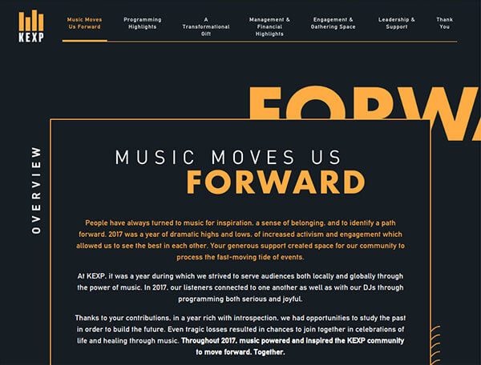
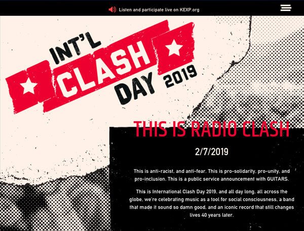
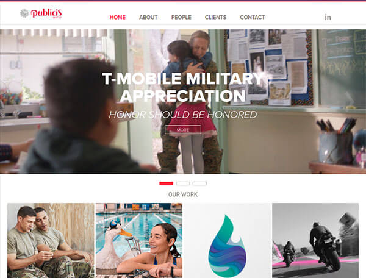

<section id="section4" class="section4-container">
  <div class="section4-content container">
    <div class="row">
      <div class="col-12 websites-headline">
        
      </div>

      <div class="col-12">

        <div class="web-container row">
          <div id="webImg1" class="col-lg-6 col-md-12 web-img-box hide">
            <a href="https://annualreport.kexp.org/" target="_blank"></a>
          </div>
          <div id="webTxt1" class="col-lg-6 col-md-12 web-txt arial black hide">
            <h3 class="bold underline"><a href="https://annualreport.kexp.org/" target="_blank">KEXP ANNUAL REPORT 2017</a></h3>
            <p>
              HTML5, JQuery, Gulp, Sass, Bootstrap<br>
              Responsibilities:<br>
            </p>
            <ul>
              <li>Styled various pages so they are responsive and true to designer’s PSD.</li>
              <li>Built and styled <a href="https://annualreport.kexp.org/programming_highlights.html" target="_blank"><span class="bold">Programming Highlights</span></a>.</li>
              <li>Fixed numerous cross-browsers compatibility issues.</li>
              <li>Converted line arts to functional svgs for svg animation script (written by Galen Broderick).</li>
            </ul>
          </div>
        </div>

        <div class="web-container row">
          <div id="webImg2" class="col-lg-6 col-md-12 web-img-box hide">
            <a href="http://internationalclashday.com/" target="_blank"></a>
          </div>
          <div id="webTxt2" class="col-lg-6 col-md-12 web-txt arial black hide">
            <a href="http://internationalclashday.com/" target="_blank"><h3 class="bold underline">KEXP CLASH DAY '19</h3></a>
            <p>
              HTML5, JQuery, Gulp, Sass, Bootstrap<br>
              Responsibilities:<br>
            </p>
            <ul>
              <li>Built and styled majority of the page.  The core template and parallax script written by Galen Broderick.</li>
            </ul>
          </div>
        </div>

        <div class="web-container row">
          <div id="webImg3" class="col-lg-6 col-md-12 web-img-box hide">
            <a href="http://publicisseattle.com/" target="_blank"></a>
          </div>
          <div id="webTxt3" class="col-lg-6 col-md-12 web-txt arial black hide">
            <a href="http://publicisseattle.com/" target="_blank"><h3 class="bold underline">PUBLICIS SEATTLE WEBSITE '18</h3></a>
            <p>
              HTML5, Javascript, CSS, Wordpress<br>
              Responsibilities:<br>
            </p>
            <ul>
              <li>Maintained and updated various sections.</li>
              <li>Fixed bugs associated with customizing our own theme and plugins.</li>
              <li>Created new layout for preview page during project creation.</li>
            </ul>
          </div>
        </div>

      </div>

      <div class="col-12">
        <div class="back-top arial white"><a href="#navSection">BACK TO TOP</a></div>
      </div>

    </div>
  </div>
</section>
